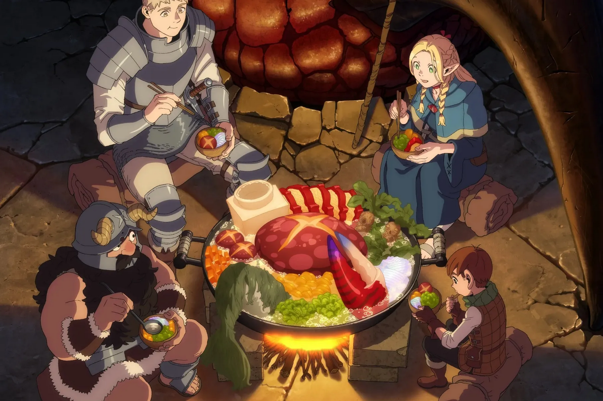

Delicious (Monster) Recipes!
The recipes below are taken from the Dungeon Meshi manga/anime, thank you Ryoko Kui-sensei!

Man-Eating Plant Tart
Jack-o'-Lantern Potage and Sauteed Dryad Buds with Cheese
Exorcism Sorbet
Red Dragon Meal
Naturally Delicious Treasure Insect Snacks
Credits: Dungeon Meshi wiki page :3